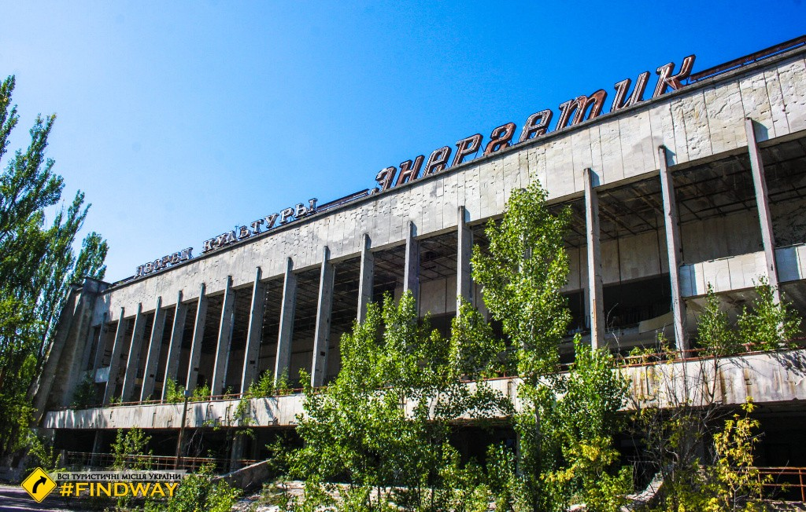

Визначні пам'ятки та архітектура 🏛️
Головними символами Прип'яті залишаються парк атракціонів із жовтим колесом огляду, готель «Полісся», Палац культури «Енергетик» та басейн «Лазурний». Широкі проспекти спроєктовані за принципом вільного планування, тому навіть зараз відчувається масштаб інженерного задуму.

Кухня та гастрономічні спогади 🍲
У часи розквіту місто славилося кафе «Прип'ять» на набережній річки з панорамними вітражами, де подавали морозиво та фірмову випічку. Під час сучасних одноденних виїздів мандрівники беруть сухпайок із собою або обідають у їдальні міста Чорнобиль після проходження дозиметричного контролю.
Культура та історія краю 📖
До 1986 року Прип'ять вважалася одним із наймолодших міст України — середній вік мешканців становив близько 26 років. Тут діяли музичні школи, кінотеатр «Прометей» і спортивні секції, а культурне життя вирувало навколо центральної площі.

Особисті враження та віртуальний маршрут 🗺️
Найсильніша емоція від Прип'яті — усвідомлення того, як швидко природа відвойовує простір без людини. Прогулянка вулицею Курчатова залишає глибокий філософський слід і вчить бережно ставитися до безпеки та технологій.